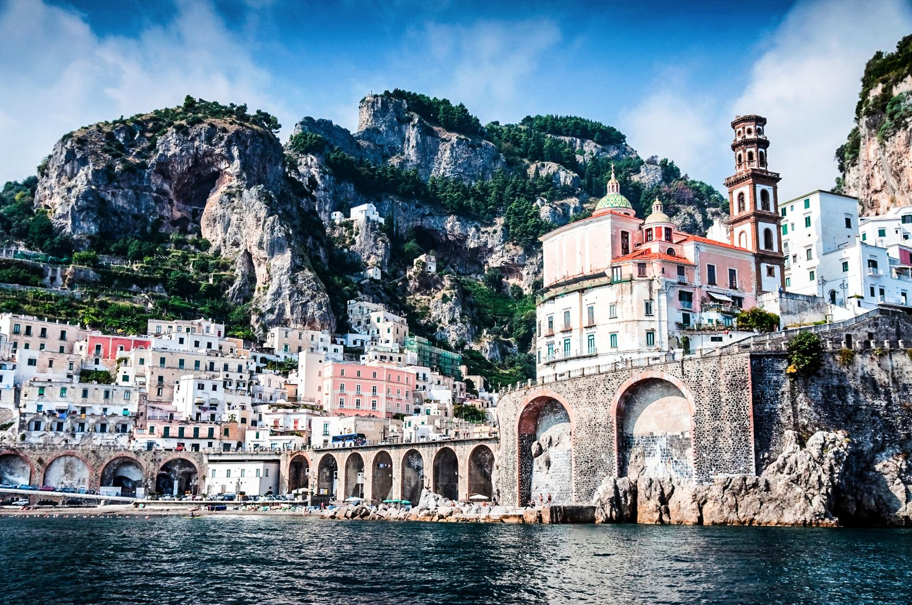
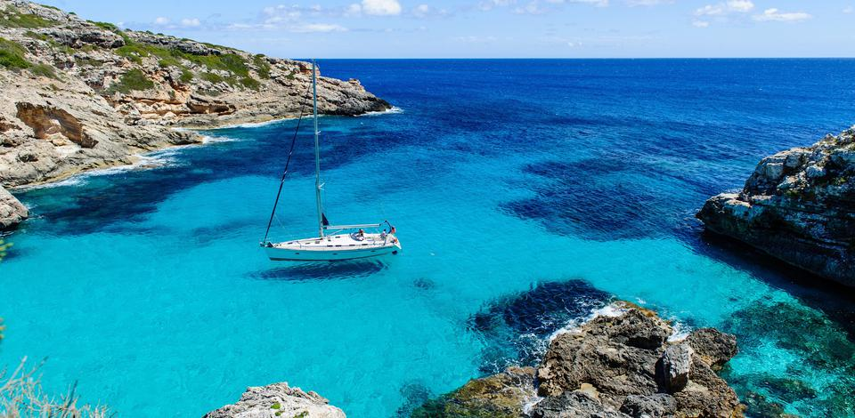
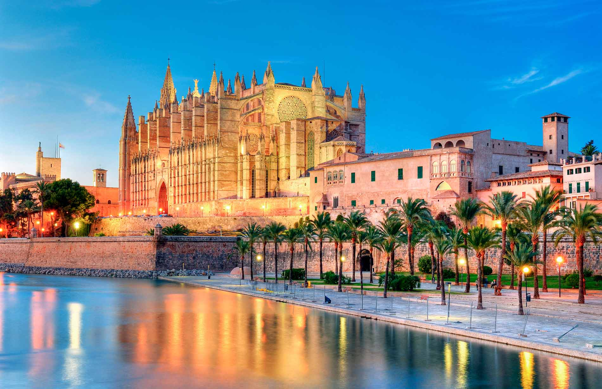

Where to next?
Click a link to see some of our favourite spots in the best destinations worldwide,
or check out the trips being organised below!



Italian Road Trip
Hi, I'm Issy and I'm looking for some new pals to road trip through Italy with! Below is my provisional plan for July 2019.
- Collect the car from Marco Polo Airport, Venice.
- Drive to Verona. Stay for two days, and see the balcony where Romeo and Juliet was supposedly set
- Drive to Milan, and spend two days taking advantage of some incredible shopping
- Drive to Pisa. One night stay to see the famous leaning tower and eat pizza!
- Head to Florence for two days, learn about the history of the Medici family and see Michaelangelo's David IRL
- Drive to the mountain village of Grosseto for one night.
- Arrive in Rome and take in the sights of the old forum and the famous Colosseum

Barcelona
Hey, my name is Mark and I'm excited to head to Barcelona next month! Come along and join me
- Placa d'Espanya
- Casa Batllo
- The Gothic Quarter.
- Montjuic, which overlooks Barcelona.
- 512 meters above the City, take in the views from Tibidabo.
- La Sagrada Familia for the famous Basilica.
- Watch, and join in with, Flamingo Dancers.
- Enjoy Spanish tapas in the Latin quarter
- Visit Barcelona's famous beaches
- Eat burgers and drink beer at Makamaka, a Barcelonian institution
- Get breakfast from La Boqueria
- Enjoy Guadi's architecture in Parc Guell

Sail around the Med!
Hey, it's Melanie, and I'm so excited to go explore the Mediterranean! Here's my plan:
- 22nd June: Sorrento, Italy. Faraglioni rocks.
- 23rd June Trapani Sicily, Italy. Visit the ancient city of Erice, the hilltop fortress overs panoramic views of Sicily.
- 24th June Valltta, Malta. Explore the treasures of malts landmark and cathedrals.
- 25th June Goza, Malta. Snorkelling in the crystal waters.
- 26th Taormina, Italy, to visit Mount Etna
- 27th Corfu, Greece.
- 28th Kotor, Montenegro. Lipska cave exploring
- 29th Dubrovnik, Croatia. Kayak around the city walls of Dubrovnik.

Party in Mallorca!
Em here - fancy a short trip sailing around Mallorca and Ibiza? Thought it might be fun to see these sites. May 2019!
- Formentor Beach, on the Island of Illa de Formentor, with perfectly clear water.
- Porto Cristo: Visit the marinas and the underground cave system of lakes, Caves of Drach.
- Cala Santenyi - the ‘es pontas’ stone arch is found here.
- Cala Boquer. Only accessible by boat, or foot, this secluded beach looks perfect for peaceful snorkelling.
- Resort of Sant Elm - dine in a restaurant overlooking the Natural Parl of Sa Dragonera.
- Palma Cathedral and fortress in Mallorca
- Llotja Mallorca
- Iglesia de Sant Bartomeu